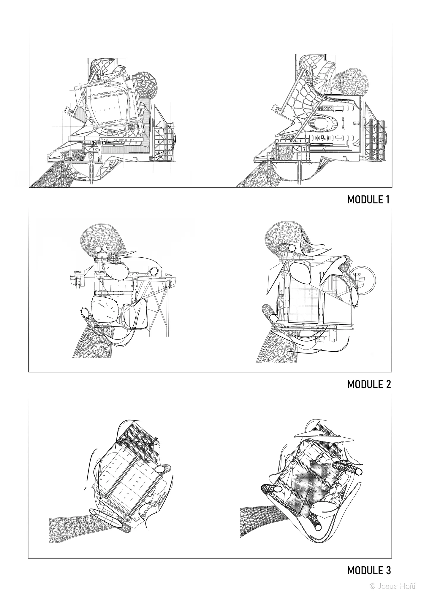

CAN ARCHITECTURE EMBODY THE DEPTHS OF UNCHARTED SPACE?
// ABYSSORA //
ETH ZÜRICH / CONFLUENCE INSTITUTE
Abyssora explores the boundary between architectural intervention and the aquatic abyss.
Positioned at the threshold of fluid dynamics and submerged structural modules, the project investigates
how human habitat can adapt to deep marine environments without dominating them.
Through modular pods—designed for sunbathing at the surface, oceanographic observation beneath, and acoustic listening in the deep—Abyssora forms an interconnected inventory of life, shadow, and water.
Spatial modules unfold vertically: from floating access pontoons down to benthic anchor points, creating a resilient, self-sustaining community beneath the tide.


